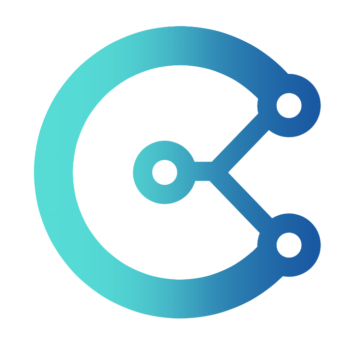
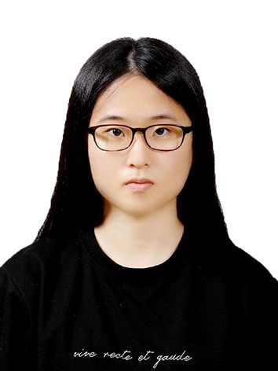

OUR
RESEARCH
Digital Curation LAB은 디지털 환경에서 개인의 정보 이용과 사람 간 상호작용이 사회 현상으로 이어지는 과정을 여러 수준에서 분석하고 모델링합니다.
Digital Curation LAB analyzes and models, at multiple levels,
how individuals’ information use and social interactions in
digital environments give rise to collective social phenomena.
관계의 형성과 변화, 사회적 영향, 정보 확산
Relationship formation and change,
social influence, information diffusion
정보의 선택·조직·개인화·유통과
이용자의 미디어 선택
Information selection, organization, personalization, and distribution, along with users’ media choices
설문·디지털 행동 데이터를 활용한
네트워크 분석, 머신러닝, 생성형 AI
Using survey and digital trace data for
network modeling, machine learning, and
generative AI applications
OPEN RESOURCE
Digital Curation LAB이 공개한 분석 소프트웨어와 데이터를 활용하여
다양한 분야의 연구자들이 새로운 연구 질문을 탐색하고 데이터 기반의 통찰을 도출할 수 있도록 지원합니다.
Digital Curation LAB makes its data analysis software and datasets publicly available,
enabling researchers across diverse fields to explore new research questions and generate
data-driven insights.
COMMUNITY
Digital Curation LAB의 활동을 소개합니다.
Introducing the activities of Digital Curation LAB.

DIGITAL CURATION LAB
디지털 큐레이션 랩은 정보 과부하 시대의 사회 현상을 디지털 큐레이션이라는 개념적 틀을 통해 설명하는 것을 목표로 합니다. 다양한 형태의 큐레이션이 복합적으로 작용하여 집합적 미디어 이용 패턴과 더 광범위한 사회 현상으로 이어지는 메커니즘을 탐구합니다.
이를 위해 설문 데이터와 디지털 추적 데이터를 결합하여 미디어 이용, 정보 탐색과 회피, 선택적 노출, 참여, 대인 상호작용을 분석합니다. 사회 네트워크 분석, 통계 모델링, 머신러닝, 딥러닝을 활용하여 관계 구조에 내재된 패턴을 파악하고 설명합니다. 또한 LLM 기반 에이전트를 활용해 인간의 태도, 판단, 커뮤니케이션 행동을 모사하고 분석하며, 이러한 연구 방법의 타당성과 한계도 함께 검토합니다.
Digital Curation LAB aims to explain social phenomena in the age of information overload through the conceptual framework of digital curation. The Lab explores the mechanisms through which various forms of curation become intertwined and give rise to collective patterns of use and broader social phenomena.
Using survey and digital trace data, we analyze media use, information seeking and avoidance, selective exposure, participation, and interpersonal interaction, and explain relational patterns through social network analysis, statistical modeling, machine learning, and deep learning. We also use LLM based agents to simulate and analyze human attitudes, judgments, and communication behaviors and to examine the validity and limitations of these methods.
Digital Curation LAB
Network Analysis & Data curation Laboratory
1호선 외대앞역 1번 출구 (도보 10분) Line 1 / Gyeongui-Jungang Line, Hoegi Station Exit 1 (20 min walk)
Line 1, Hankuk Univ. of Foreign Studies Station Exit 1 (10 min walk)
교수 Professor
최수진 (Sujin Choi) Sujin Choi
지도교수 / 연구책임자 Principal Investigator / Full Professor
Email: sujinchoi@khu.ac.kr
학력 Education
- • Ph.D., University of Texas at Austin, Department of Radio-Television-Film, College of Communication, Texas, U.S. • Ph.D., University of Texas at Austin, Department of Radio-Television-Film, College of Communication, Texas, U.S.
- • M.A., Indiana University, Department of Telecommunications, College of Arts and Sciences, Bloomington, Indiana, U.S. • M.A., Indiana University, Department of Telecommunications, College of Arts and Sciences, Bloomington, Indiana, U.S.
- • 연세대학교 언론홍보대학원 석사 • M.A., Yonsei University, Graduate School of Journalism and Mass Communication, Seoul, Korea
- • 연세대학교 행정학과 학사 • B.A., Yonsei University, Department of Public Administration, College of Social Science, Seoul, Korea
수상 내역 Awards
[Outstanding Research Award] [Outstanding Research Award]
• 한국연구재단 우수성과50선(이공계/인문사회계 통합) 수상으로 인한 교육부 장관 표창 (2023년 12월) • Ministry of Education (Dec. 2023)
[Annual Research Award] [Annual Research Award]
• 경희대 연구우수교원 (2025, 2023, 2022, 2021, 2020, 2019) • Kyung Hee University (2025, 2023, 2022, 2021, 2020, 2019)
[Research Award] [Research Award]
• 한국갤럽 우수논문상 (2015년 6월) • Gallup Korea (June 2015)
[Top Paper Award] [Top Paper Award]
• 한국방송학회 학술상 (2014년 11월) • Korean Association for Broadcasting & Telecommunication Studies (Nov. 2014)
• KACA session in International Communication Association (2013년 6월) • KACA session in International Communication Association (June 2013)
[Student Paper Award (2nd place)] [Student Paper Award (2nd place)]
• Telecommunications Policy Research Conference (2010년 10월) • Telecommunications Policy Research Conference (Oct. 2010)
[Professional Development Award] [Professional Development Award]
• Office of the Vice Provost & Dean of Graduate Studies, The University of Texas at Austin (2010년 10월) • Office of the Vice Provost & Dean of Graduate Studies, The University of Texas at Austin (Oct. 2010)
[Graduate School Recruitment Fellowship (15,000달러)] [Graduate School Recruitment Fellowship ($15,000)]
• Office of the Vice Provost & Dean of Graduate Studies, The University of Texas at Austin (2010년 9월 ~ 2011년 5월) • Office of the Vice Provost & Dean of Graduate Studies, The University of Texas at Austin (Sept. 2010-May 2011)
[Best Student Paper Award] [Best Student Paper Award]
• International Telecommunications Education & Research Association (2009년 4월) • International Telecommunications Education & Research Association (April 2009)
연구원 Research
주호준 (Hojun Joo) Hojun Joo
박사과정 Doctoral Student
Selective Exposure / News Curation / News Avoidance Selective Exposure / News Curation / News Avoidance
Email: joo4456@khu.ac.kr
학력 Education
- • 경희대학교 미디어학과 박사수료 (2024-현재) • Ph.D. Completed Coursework, Dept. of Media, Kyung Hee University (2024-Present)
- • 주식회사 엔젠바이오 헬스케어개발본부 데이터모델링팀 (2021~2023) • Data Modeling Team, Healthcare Development Div., NGeneBio Co., Ltd. (2021-2023)
- • 경희대학교 언론정보학과 석사 (2018-2022) • M.A. in Media and Communication, Kyung Hee University (2018-2022)
- • 국민대학교 삼림과학대학 임산생명공학과 학사 (2011-2018) • B.S. in Forest Products & Biotechnology, College of Forest Science, Kookmin University (2011-2018)
수상 내역 Awards
• 대학원생 우수논문상 (한국언론학회; 2020년 5월) • Outstanding Paper Award for Graduate Students (Korean Society for Journalism & Communication Studies; May 2020)
현경주 (Hyun, Gyeongju) Hyun, Gyeongju
석사과정 Master's Program
네트워크 분석 / 기후 저널리즘 Network Analysis / Climate Journalism
Email: ju11009@khu.ac.kr
학력 Education
- • 석사과정 (2024~현재) • Master's program (2024-present)
- • 미디어학과 학사 • B.A. in Media
수상 내역 Awards
• 제12회 해양수산 정보식별 및 공공데이터 활용 창업경진대회 대상 (해양수산부 장관상; 2025년 8월) • Grand Prize Winner of the "12th Marine and Fisheries Business & Public Service Competition" (South Korea's Ministry of Oceans and Fisheries; August 2025)
최아영 (Choi, A-young) Choi, A-young
석사과정 Master's Program
Online Communities / SNA / Computational Methods Online Communities / SNA / Computational Methods
Email: iamcay11@khu.ac.kr
학력 Education
• 경희대학교 사회학, 사회과학융합 학사 (2019~2026) • B.A. in Sociology & Social Science Convergence, Kyung Hee University (2019-2026)

이성은 (Lee, Seong Eun) Lee, Seong Eun
학부연구원 Undergraduate Researcher
Network Agenda-setting / Network Analysis Network Agenda-setting / Network Analysis
Email: dlsmshizyy67@khu.ac.kr
학력 Education
• 미디어학과 학사과정 • B.A. candidate in Media
디지털 큐레이션
Digital Curation
디지털 미디어 환경에서 정보가 선택·조직·개인화·유통되는 과정을 디지털 큐레이션의 관점에서 연구합니다.
저널리즘적, 전략적, 개인적, 사회적, 알고리즘적
큐레이션이 정보의 흐름을 재구성하는 방식과,
이러한 재구성이 필터 버블과 정치적 양극화 등의 사회 현상으로 이어지는 메커니즘을 탐구합니다.
We study how information is selected, organized, personalized, and distributed in digital
media environments from the perspective of digital curation. Within this framework,
we
examine how journalistic, strategic, personal, social, and algorithmic forms of curation
reshape information flows and the processes through which these reconfigured flows give rise
to
social phenomena such as filter bubbles and political polarization.
사회 네트워크 분석
Social Network Analysis
네트워크 이론을 바탕으로 사람 간 상호작용 속에서 관계가 형성되고 유지되거나 소멸하는 과정과, 관계 구조를 통해 사회적 영향이 작동하고 정보가 확산되며 의견이
교환되는 메커니즘을 연구합니다.
이를 위해 네트워크 분석, 머신러닝, 딥러닝을 활용하여 관계 데이터의 구조적 패턴을 분석하고,
관계 구조와 변화가 갖는
사회적 의미를 해석합니다.
Drawing on network theory, we study how relationships are formed, maintained, or dissolved through interpersonal interactions, as well as the mechanisms through which social influence operates, information spreads, opinions are exchanged. To this end, we use network analysis, machine learning, and deep learning to examine structural patterns in relational data and interpret the social meaning of relational structures and their changes.
미디어 선택과 이용
Media Selection and Use
이용자가 정보를 탐색·소비·평가·공유하기 위해 미디어를 선택하고 이용하는 방식을 연구합니다.
또한 이러한 미디어 선택과 이용이 개인의 정보 노출, 태도 형성
및
사회적 참여와 어떻게 연결되는지를 살펴봅니다.
이를 위해 설문 데이터와 디지털 행동 데이터를 활용하여 개인적 요인과 사회적 맥락이
미디어 선택과 이용에
어떻게
작용하는지를 분석합니다.
We study how users select and use media to seek, consume, evaluate, and share information.
We also examine how media selection and use are related to individuals’ information
exposure, attitude formation, and social participation. To this end, we link survey data and
digital trace data to analyze how individual factors and social contexts shape media
selection and use.
생성형 AI 및 LLM 기반 사회연구
Generative AI and LLM-Based Social Research
생성형 AI와 LLM 기반 에이전트를 활용한 실리콘 샘플링, 합성 응답자 등의 연구 방법을 통해
인간의 태도, 판단 및 커뮤니케이션 행동을 모사하고
분석합니다.
또한
이러한 접근을 사회 현상 연구에 적용할 때의 타당성과 한계, 방법론적 함의를 탐구합니다.
Using research methods such as silicon sampling and synthetic respondents based on
generative AI and LLM-based agents,
we simulate and analyze human attitudes, judgments,
and
communication behaviors. We also examine the validity, limitations, and methodological
implications of applying these approaches to the study of social phenomena.
네트워크 통합 분석기 (베타)
Network Integrated Analyzer (Beta)
에펨코리아 게시글 및 댓글 데이터
FMkorea Posts and Comments Dataset
삼성노동조합 총파업 유튜브 데이터
YouTube Data on the Samsung Electronics Union's General Strike
소셜네트워크와 소셜마이닝 Social Network and Social Mining Link ↗
이 과목에서는 소셜 네트워크에 대한 이론/개념을 배우고 소셜 네트워크 분석을 수행해본다. 이를 통해 제반 미디어/커뮤니케이션 현상에 내재된 사회적 의미를 추출해본다. 이 과정에서 속성적 및 관계적 시각에서 분석적으로 사고하는 법을 함양한다.
This course explores social network theories/concepts and employs social network analysis. Students learn how to extract social implications from various media/communication phenomena. Students also develop analytical thinking ability from both attributional and relational perspectives.
소셜데이터 프로그래밍 Social Data Programming Link ↗
이 과목에서는 소셜 데이터를 직접 수집한 후 소셜 네트워크 분석, 텍스트 분석, 딥러닝 등 다양한 방법들을 활용하여 디지털 공간에서 이루어진 사람들 간의 상호작용에 대해 분석 및 실습해본다. 이 과정에서 소셜 데이터의 특수성과 프로그래밍 언어에 대해 배운다.
In this course, students collect social data and analyze interactions between people in the digital sphere, using various methods such as social network analysis, text analysis, and deep learning. Through this process, students acquire knowledge about programming languages and gain insights into the characteristics of social data.
여론과 미디어 Public Opinion and Media Link ↗
텔레비전, 신문, 인터넷 포털, 소셜 미디어 등 다양한 미디어를 통해 수많은 정보를 접하는 오늘날, 어떠한 미디어/플랫폼을 통해 어떤 정보를 어떻게 선별해서 소비하느냐가 점차 중요해지고 있다. 이 과목에서 학생들은 미디어의 발달과 더불어 정보의 생산, 유통, 소비 측면에서의 변화가 여론 형성 과정에 미치는 영향에 대해 배우고, 뉴스 큐레이션과 알고리즘 등 최신 디지털 저널리즘 현상에 대해서도 다룬다. 이런 논의를 통해 궁극적으로 미디어 및 정보 리터러시를 함양하고자 한다.
Under the circumstance where information sources encompass diverse media and platforms such as TV, newspapers, Internet portals, and social media, it is getting more important to examine how people select and consume what information through which media/platforms. This course addresses the change in the production, distribution, and consumption of news and information along with the development of digital technologies and the effect of this change on public opinion formation. We also discuss digital journalism issues in regards to news curations and algorithms. This course will help students to enhance media/information literacy.
캡스톤 디자인 Capstone Design Link ↗
빅데이터분석기업과 산학협력으로 수업을 운영하고 스스로 프로젝트를 직접 수행해봄으로써, 이 과정들이 실제 현장에서 어떻게 적용되는지도 경험해본다. 이 일련의 과정들을 통해 학생들은 네트워크분석/텍스트마이닝 소프트웨어 활용능력, 관계적 시각에서의 창의적 문제 기획/분석/해결능력, 그리고 커뮤니케이션 연구에 대한 이해력을 함양한다.
Courses are operated through industry-academia collaboration with big data analytics firms, and by directly carrying out projects themselves, students experience how these processes are applied in real-world settings. Through this series of processes, students cultivate proficiency in utilizing network analysis and text mining software, creative problem-planning, analysis, and solving skills from a relational perspective, and an understanding of communication research.
AI와 큐레이션 AI and Curation Link ↗
이 과목에서는 의미네트워크 분석, 텍스트 분석, LLM 기반 분석 등에 대해 다룬다. 이를 토대로 디지털 미디어 환경에서의 정보 선택, 필터링, 프레이밍, 가공, 배열, 생성 등 정보 큐레이션과 관련된 일련의 현상에 대한 이해를 도모한다.
This course explores semantic network analysis, text analytics, and LLM-based analytical methods. Through these approaches, students will gain insights into various aspects of information curation within digital media ecosystems, including content selection, filtering, framing, processing, organization, and generation.
컴퓨터매개커뮤니케이션 Computer-Mediated Communication Link ↗
사회/의미 네트워크 분석을 토대로 한 접근에 초점을 맞춰서 컴퓨터 매개 환경에서 사람들 간의 의사소통 관계가 어떻게 형성되는지를 살펴본다. 본 수업에서는 사람들의 일상적 커뮤니케이션 기록인 비정형 데이터를 사용하여 관계적 시각에서 커뮤니케이션의 본질에 접근해보고자 한다. 또한, 데이터의 방대한 양(volume)에 초점을 맞추어 속성적 시각에서 기계학습을 기반으로 하는 인공신경망 모형에 대해서도 살펴본다.
This course examines how communication relationships between people are formed in computer-mediated environments, focusing on an approach based on social and semantic network analysis. Using unstructured data—records of people's daily communication—this course aims to explore the essence of communication from a relational perspective. Additionally, focusing on the vast volume of data, the course examines machine learning-based artificial neural network models from an attribute-based perspective.
소셜데이터애널리틱스 Social Data Analytics Link ↗
‘소셜 데이터’를 중심으로 이를 분석함에 있어서 필요한 일련의 과정들에 대해 다루고자 한다. 여기서 소셜 데이터라 함은 인구통계 데이터, 행위 데이터, 감정 데이터, 관계 데이터, 콘텐츠 데이터 등을 포괄한다. 지리정보 데이터, 센서 데이터, 트래픽 데이터, 거래정보 데이터 등 다양한 유형의 데이터가 존재하는 가운데, 소셜 데이터는 근본적으로 사람과 사람 간의 상호작용을 내포한다는 점에서 여타 데이터들과 차별화된다.
This course covers a series of processes required for analyzing 'social data'. Social data encompasses demographic data, behavioral data, sentiment data, relational data, and content data. While various types of data exist such as geospatial data, sensor data, traffic data, and transactional data, social data is fundamentally differentiated from other data types as it inherently implies interactions between people.
OTT콘텐츠 이용자 프로파일링: 이분형 네트워크 기반 SAOM 및 GNN 설계
OTT Content User Profiling: Bipartite-Network based SAOM & GNN Modeling
본 연구는 개인의 미시적 콘텐츠 선택이 집합적 이용 패턴으로 나타나는 과정을 네트워크 모형으로 설명하고, 시뮬레이션을 통해 해당 모형의 설명력을 평가한다.
This study develops a network model to explain how collective consumption patterns emerge from individual content choices and evaluates the model’s explanatory power through simulations.
개인주도 디지털콘텐츠 큐레이션 패턴 설계: 확률적 행위자 지향 모형화(SAOM) 및 인공신경망과의 비교를 중심으로
User-Driven Digital Content Curation Pattern: Designing with Stochastic Actor-Oriented Model and Validating with Artificial Neural Network
로그 데이터와 설문 데이터를 바탕으로 이용자와 콘텐츠의 속성 및 이들 간의 상호작용을 분석하여 개인의 콘텐츠 큐레이션이 수행되는 메커니즘을 규명합니다.
By linking digital log data with survey data, this study analyzes user and content attributes and their interactions to identify the mechanisms underlying user-driven digital content curation.
무엇이 보수와 진보를 서로 대화하게(또는 대화하지 않게) 하는가? 종단 확률적 행위자 지향 모형으로 살펴본 대화 네트워크의 생성, 유지, 소멸 그리고 정치 양극화
What makes Conservatives and Liberals Talk (or Not to Talk) to Each Other? Longitudinal Stochastic Actor-Oriented Modelling (SAOM) for the Creation, Maintenance, and Dissolution of Communication Networks and Political Polarization
정치적으로 동질적이거나 이질적인 대화가 형성되는 메커니즘을 개인, 관계 및 구조적 수준에서 살펴보고, 이러한 대화가 정치 양극화를 강화하거나 완화하는 조건을 분석합니다.
This study examines, at the individual, relational, and structural levels, the mechanisms that lead conservatives and liberals to engage or not engage in conversation with each other and analyzes the conditions under which these interactions intensify or mitigate political polarization.
공학적 분석기법을 활용한 기사 신뢰도 예측모형 연구
Modeling News Credibility Prediction with Computational Methods
텍스트 마이닝이나 자연어 처리 등 공학적 분석 기법을 적용하여 일반 뉴스 소비자들의 뉴스 기사에 대한 신뢰도를 객관적으로 예측하고 평가하는 모형을 개발합니다.
This study develops models to objectively predict and assess the credibility of news articles for non-expert news consumers, applying computational methods such as text mining and natural language processing.
커뮤니티 전략 바이블 : 커뮤니티 빌딩과 플랫폼 적용 가능성 탐색
The Business of Belonging : Exploring Community Building & Platform Application
초연결 사회로 진입함에 따라 강조되고 있는 '커뮤니티' 를 이해하고, 핵심적인 커뮤니티 빌딩 전략을 온라인 플랫폼 환경에 접목하여 실천적 커뮤니케이션 연구 방향을 탐색한다.
Understanding 'community' emphasized in a hyper-connected society and exploring practical communication research directions by applying core community building strategies to online platform environments.
등록된 소식이 없습니다.
No events registered yet.
랩실 활동이 사진과 함께 게시될 예정입니다.
Lab activities and photos will be updated soon.